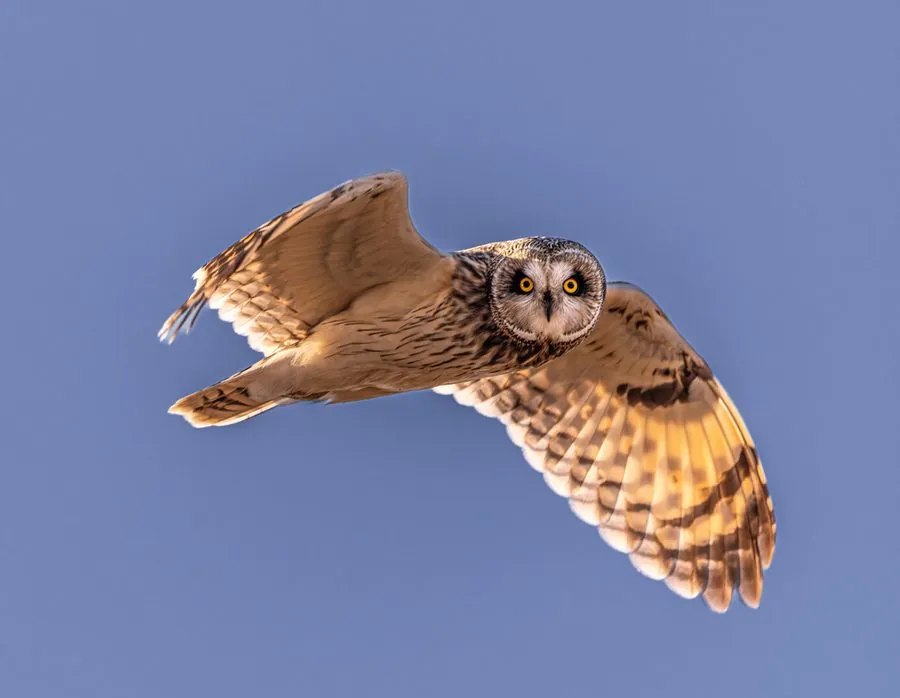

鸟类 · 动物界
短耳鸮 Asio flammeus

耳簇极短、几乎看不出的中型鸮类，面盘橙黄、眼金黄，白天也能在开阔草地上空低飞搜寻田鼠，广布于全球温带与寒带。
- 分类
- 门脊索动物门纲鸟纲目鸮形目科鸱鸮科属耳鸮属
- 栖息环境
- 开阔草原、沼泽草甸、农田、苔原与机场草地
- 地理分布
- 欧亚大陆、北美洲、南美洲南部及部分太平洋岛屿
- 保护级别
- IUCN 无危（LC）；中国国家二级保护动物
物种志
短耳鸮体长 34–43 厘米，翼展 0.9–1.1 米，体重 200–500 克，雌鸟略大。面盘明显，呈橙黄至浅褐色，眼周黑色，眼睛金黄色，头顶有两簇极短的“耳羽”，短到几乎看不出来，故得名短耳鸮。体羽黄褐与深褐相间，背部纵纹粗重，腹部有深色纵斑，翼下有一块明显的黑色腕斑，飞行时格外醒目。
它们广布于全球温带、寒带与部分热带地区，栖息于开阔草原、沼泽、农田、苔原与机场草地。与多数夜行性鸮类不同，短耳鸮常在白天活动，低空缓慢飞行，边飞边听，靠敏锐听觉定位田鼠、旅鼠等猎物，也会停在地面或低矮栖木上守候。食性以小型啮齿类为主，兼食鸟类与昆虫。繁殖期在地面草丛中筑浅巢，每窝 4–14 枚卵，数量随鼠类丰度变化，雌鸟孵卵约 25 天。它们不筑永久巢，随猎物数量游荡繁殖。
形态与习性
- 体长约 34–43 cm，翼展 0.9–1.1 m
- 体重约 200–500 g，雌鸟略大
- 食性田鼠、旅鼠等小型啮齿类，兼食鸟类与昆虫
- 繁殖地面草丛浅巢，每窝 4–14 枚卵，孵卵约 25 天
- 活动节律常在白天活动，低空缓慢巡飞觅食
- 识别特征耳簇极短几乎不见，翼下有明显黑色腕斑
- 寿命野外约 4–6 年，最长记录超过 12 年
趣味知识
- 短耳鸮的耳簇短得几乎看不见，这是它与长耳鸮最直观的区别。
- 它白天也出来打猎，常在草地上贴地低飞，边飞边听田鼠的动静。
- 鼠类多的年份，它一窝能产十几枚卵；鼠少时可能完全不繁殖。